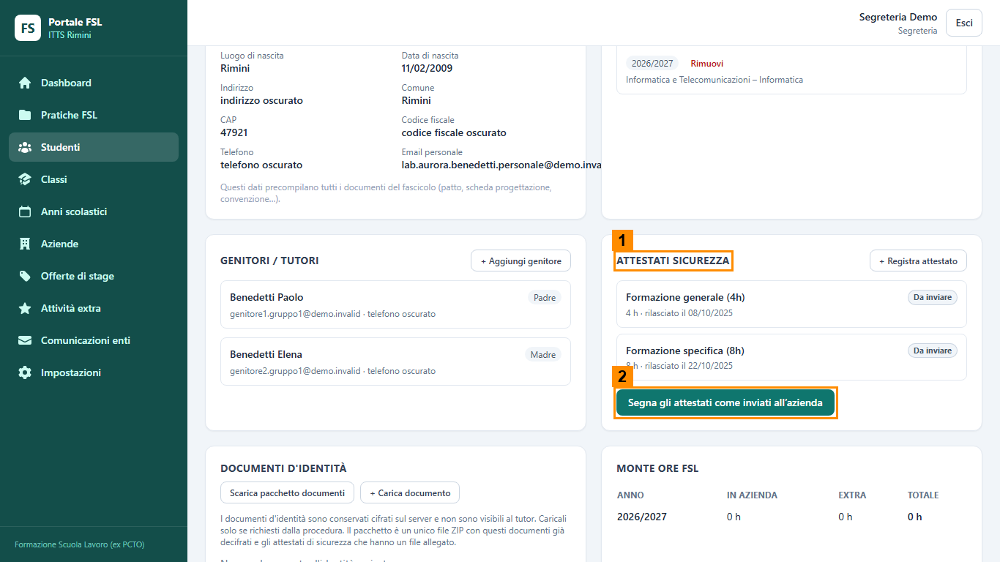
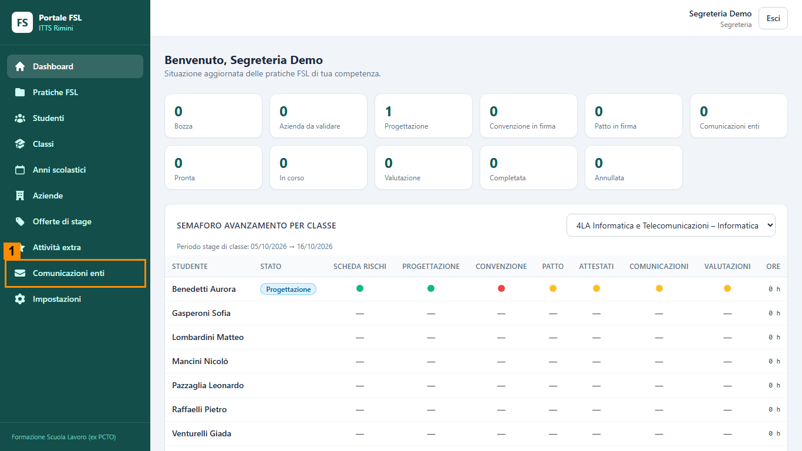
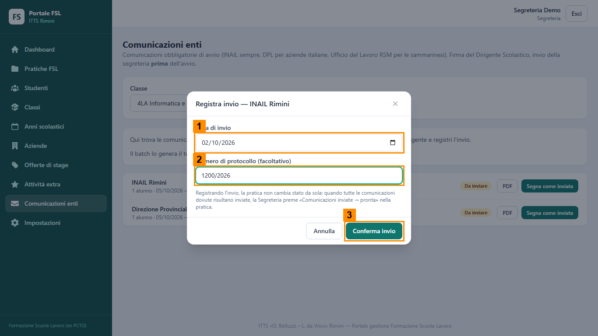

Scheda del ruolo: Segreteria
Obiettivo
Hai due momenti. Prima della convenzione registri che gli attestati di sicurezza dello studente sono stati messi a disposizione dell'azienda. Dopo la firma del patto registri la data e il protocollo con cui sono state inviate le comunicazioni agli enti, e porti la pratica a «Pronta».
Cosa fare, passo per passo
Gli attestati di sicurezza
- Entra con l'account della scuola e lascia spenta la casella Ricordami.
- Dal menu Studenti apri la scheda dello studente del tuo gruppo.
- Nel riquadro Attestati sicurezza (1 nell'immagine) trovi la formazione generale e quella specifica, entrambe «Da inviare».
- Premi Segna gli attestati come inviati all'azienda (2) e poi Segna come inviati nella finestra. Ogni attestato passa a «Inviato all'azienda».
- Avvisa il Tutor interno: ora può generare la convenzione.

Le comunicazioni agli enti
- Quando la pratica è in «Comunicazioni enti», apri il menu Comunicazioni enti (1 nell'immagine seguente). Il Tutor interno ha già preparato le righe INAIL e DPL con il bottone che le prepara tutte insieme (Genera batch): per te non c'è.
- Il modulo PDF lo firma il Dirigente fuori dal portale. Dopo averlo spedito, per ogni riga premi Segna come inviata.
- Scrivi la data di invio (1 nell'immagine successiva) e il numero di protocollo (2). Premi Conferma invio (3).
- Quando entrambe le righe sono inviate, apri la pratica e premi Comunicazioni inviate → pronta. Lo stato non cambia da solo.


Cosa controllare
- Dopo il passo 4 gli attestati sono «Inviato all'azienda».
- Le due comunicazioni, INAIL e DPL, risultano «Inviata» con data e protocollo.
- Lo stato della pratica, dopo il tuo ultimo bottone, è «Pronta».
- Il portale registra data e protocollo; l'invio vero, nella realtà, lo fai tu: in laboratorio basta dire che è stato fatto.
- Hai premuto Esci al termine.